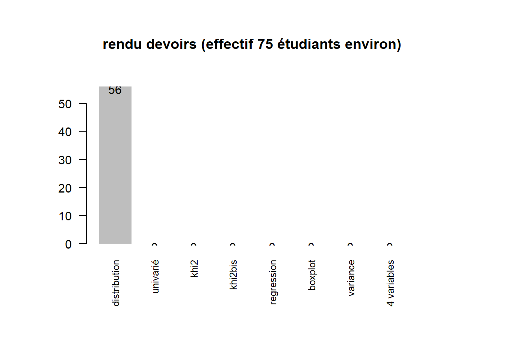
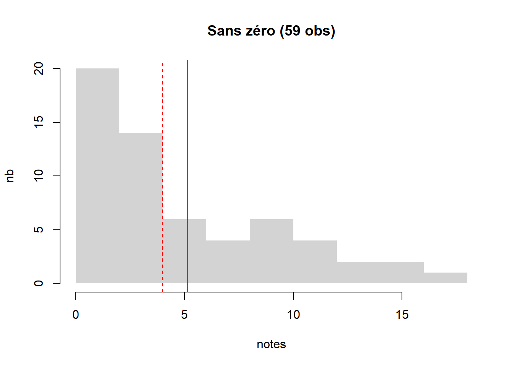
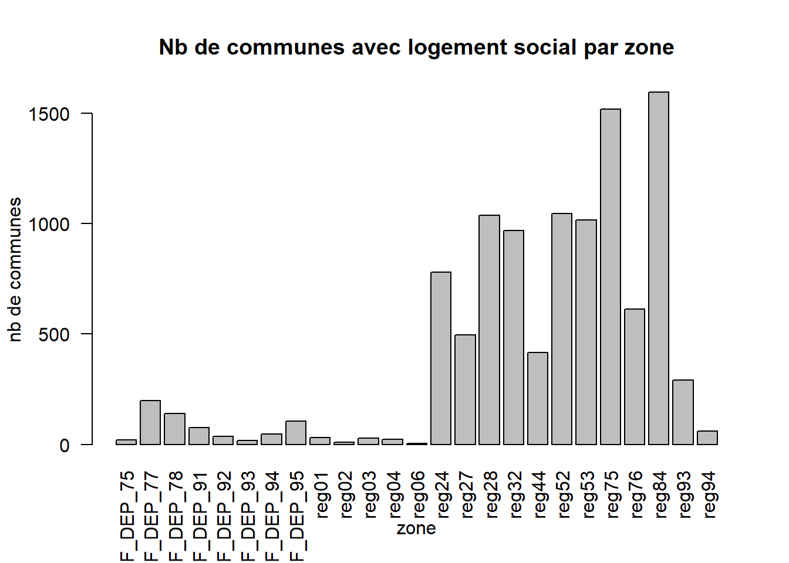
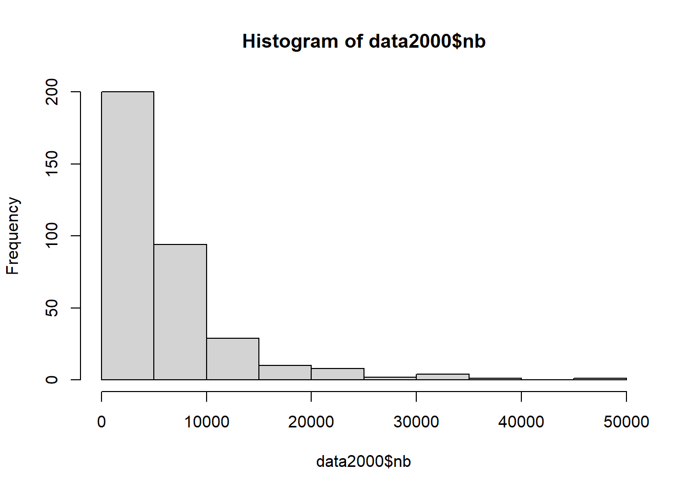

Introduction
1 Intitulé du cours
“L5GEABIM Analyses bivariées et multivariées”
data <- read.csv("data/presentation.csv", encoding = "UTF-8", header = F)
knitr::kable(data, col.names = c("groupe", "heures", "enseignant") )| groupe | heures | enseignant |
|---|---|---|
| Gr. 1 | 8h - 9h30 | Béatrice MARANGET |
| Gr. 2 | 9h30 - 11h | Béatrice MARANGET |
| Gr. 3 | 14h - 15h30 | Béatrice MARANGET |
2 Déroulé
Il va être modifié en fonction de
- votre vitesse - s’il faut prendre plus de temps sur les basiques
- mon enseignement - trois fois le même cours
A chaque cours un exercice à faire pour le prochain cours, quelque soit l’avancement du cours. Utiliser les ressources internet, poser des questions,…
13 cours en tout. 2 cours d’intro rappels stats 7 sur la stat bi-variée 3 sur la multivariée 1 cours pour un devoir sur table au mi-semestre
3 Evaluation
- 1 devoir maison à rendre vers la fin du semestre (coeff1)
- 1 devoir sur table à la mi-semestre (coeff2)
… et c’est tout ! (pas de partiel)
Au départ on utilise Libre Office (plutôt que Microsoft) puis R
Question : quelle utilisation de R ? des cours cette année ?
data <- read.csv("data/deroule.csv", encoding = "UTF-8")
knitr::kable(data)| Num.cours | date | thème | outil |
|---|---|---|---|
| 1 | 12/09/2022 | statistique univariée : base | tableur |
| 2 | 19/09/2022 | statistique univariée : indicateurs | |
| 3 | 26/09/2022 | bivariée : base + contingence | |
| NA | 03/10/2022 | ABSENCE | |
| 4 | 10/10/2022 | Khi 2 | |
| 5 | 17/10/2022 | régression | |
| 6 | 24/10/2022 | devoir sur table | |
| NA | 31/10/2022 | CONGES | |
| 7 | 07/11/2022 | initiation R | R |
| 8 | 14/11/2022 | initiation R / variance | |
| 9 | 21/11/2022 | multivariée : choix des variables | |
| 10 | 28/11/2022 | multivariée : analyse factorielle et classification | |
| 11 | 05/12/2022 | questions autour du devoir maison. Devoir à rendre le 8 au plus tard. | |
| 12 | 12/12/2022 | rendu du devoir maison et bilan formation |
4 Présentation rapide (vous êtes nombreux !)
Le framapad sert à l’émargement https://lite.framacalc.org/9pse-coursstatsorbonne2022-9we9
Quelques repères pour les 3 groupes
4.1 Qui sont les étudiants ?
74 étudiants sur 3 cours
Attention, 5 doublons de prénoms (Ambre, Camille, Marie, Antonin et Sarah), j’ai rajouté l’initiale du nom de famille.
etudiant <- read.csv("data/etudiant.csv", fileEncoding = "UTF-8")
mailetudiant <- paste(paste0(etudiant$mail, ";"))
tmp <- mailetudiant [1]
for (i in 2:73){
tmp <- paste(tmp, mailetudiant [i])}
write.csv(tmp, "data/mails.txt")
tab <- table (etudiant$prénom)
names(tab)[tab >1]## character(0)write.csv(etudiant [, c("prénom", "groupe.TD")], "cours1.csv", fileEncoding = "UTF-8")
par(mar = c(2,16,2,4))
par(mfrow = c(3,2))
for (i in 3:7){
par(mar = c(2,16,2,4))
barplot(sort(table(etudiant [,i])), border = NA,
horiz = T, las = 2, cex.names = 0.8,
main = names (etudiant) [i])
}
4.2 Présence et rendu des devoirs : chiffres clés
4.2.1 Effectif et cours
tab <- table(etudiant$groupe.TD)
i <- 2
fic <- list.files("data/", pattern = "cours")
# on recherche le fichier le plus haut
nb <- max(as.integer(substring(fic, 6,7)))
tmp <- NULL
for (i in 2:nb) {
nomFic <- paste0("data/cours", i, ".csv")
data <- read.csv(nomFic, fileEncoding = "UTF-8")
data <- data [data [,3] == "oui",]
tmp <- table(data$groupe.TD)
tab <- rbind(tab , tmp)
}
row.names(tab) <- paste0("cours ",seq(1,nb, by = 1))
knitr::kable(tab)| 1 | 2 | 3 | |
|---|---|---|---|
| cours 1 | 24 | 21 | 28 |
| cours 2 | 13 | 24 | 25 |
| cours 3 | 10 | 18 | 3 |
| cours 4 | 14 | 18 | 25 |
| cours 5 | 14 | 20 | 19 |
| cours 6 | 19 | 22 | 23 |
| cours 7 | 15 | 23 | 20 |
| cours 8 | 15 | 23 | 20 |
| cours 9 | 11 | 23 | 22 |
| cours 10 | 13 | 17 | 22 |
Graphique
barplot(tab, beside = T, main = "nombre d'étudiants par groupe et par cours", xlab = "groupe", ylab = "nb", col = terrain.colors(nb)
, border = NA, legend = F)
4.2.2 Les rendus d’exercices
rendu <- c(47,36, 29, 14,14,11,4,5)
titre <- c("distribution", "univarié", "khi2", "khi2bis", "regression", "boxplot", "variance", "4 variables")
par(mar = c(8,6,6,6))
p <- barplot(rendu, names = titre, cex.names = 0.8, las = 2, main = "rendu devoirs (effectif 75 étudiants environ)", border = NA)
text(p, y = rendu - 1, labels = rendu )
4.2.2.1 Les notes des exercices
- Le critère externe : des points faciles ?
Au 3e devoir, sur 29 rendus, la moitié (15) ne mettent pas le bon nom, ni la bonne extension. Au 4e, sur 14, 10 ont utilisé bon nom et bonne extension.
- Distribution des totaux
devoir <- read.csv("data/notes.csv", fileEncoding = "UTF-8", dec=",", na.strings = '-')
res <- (apply(devoir [,2:5], 1, sum, na.rm = T))
resSansZero <- res [res !=0]
min(resSansZero)## [1] 1densite <- density(res)
densite2 <- density(resSansZero)
hist(res, main = "Répartion du cumul des notes des 4 devoirs (max 17, 87 obs)",
xlab = "notes", ylab = "nb", freq = T,border = NA)
abline(v = mean(res), col = "red")
abline(v = median(res), col = "red", lty = 2)
hist(resSansZero, main = "Sans zéro (59 obs)", freq = T,border = NA,
xlab = "notes", ylab = "nb")
abline(v = mean(resSansZero), col = "red")
abline(v = median(resSansZero), col = "red", lty = 2)
Beaucoup de notes très faibles, mais pas seulement.
5 La donnée du cours
5.1 La source
https://www.data.gouv.fr/fr/datasets/repertoire-des-logements-locatifs-des-bailleurs-sociaux/
5.1.1 2021
Prendre le .zip de 2021, petit test d’ouverture sous moodle (Introduction/bases informatiques)
data <- read.csv("data/gros/rpls2021_geolocalise_OD_REG11_DEP93.csv", sep =";")
# distribution par commune
tab <- table(data$LIBCOM)
png("img/rpls93.png")
par(mar = c(10,4,2,2))
barplot(sort(tab), las = 2, border = NA, cex.names = 0.7)
abline(tab [ names(tab) == "Bondy"],0, col ="red")
dev.off()
write.csv(sort(tab), "data/dpt93RPLSCommune.csv")
# filtre sur Bondy
filtre <- data [data$LIBCOM == "Bondy",]
write.csv(filtre, "data/rplsBondy.csv", fileEncoding = "UTF-8")
C’est normalement ce fichier de données que nous allons utiliser pour le cours.
5.1.2 2019
Il y a un problème sur la donnée, prendre plutôt le millésime 2019
rpls2019 <- read.csv2("data/gros/RPLS2019_detail_IDF_DEP_93.csv", dec = ",")
head(rpls2019)
rpls2021<- read.csv2("data/gros/rpls2021_geolocalise_OD_REG11_DEP93.csv", dec = ",")library(sf)
rpls2019 <- rpls2019 [rpls2019$CODEPOSTAL == '93140',]
rpls2021 <- rpls2021 [rpls2021$CODEPOSTAL == '93140',]
# verif x y complet
summary(rpls2019$Y)
# spatialisation des données
rpls2019sf <- st_as_sf(rpls2019, coords = c("X", "Y"), crs = st_crs(2154))
rpls2021sf <- st_as_sf(rpls2021, coords = c("X", "Y"), crs = st_crs(2154))
write.csv(rpls2019, "data/rplsBondy.csv", fileEncoding = "UTF-8")
st_write(rpls2019sf, "data/data.gpkg", "rpls2019", delete_layer = T)
st_write(rpls2021sf, "data/data.gpkg", "rpls2021", delete_layer = T, quiet = T)library(sf)
library(mapsf)
rpls2019 <- st_read("data/data.gpkg", "rpls2019", stringsAsFactors = FALSE)
rpls2021 <- st_read("data/data.gpkg", "rpls2021")
mf_map(rpls2019, pch= 20, col = "red")
mf_map(rpls2021, col = "green", alpha = 0.8, add = T)
mf_legend(type = "typo", pos = "topright", val = c("2019", "2021"), pal = c("red", "green"), border = NA,
title = "")
mf_layout("Comparaison rpls 2019 et 2021", credits = "RPLS")5.2 RPLS France entière
Au niveau de la France, entière, on calcule le nombre de logements sociaux à l’échelle de la commune pour 2019.
Voir également, la référence au niveau du département (pour 10 M hbts)
https://www.insee.fr/fr/statistiques/2134423#titre-bloc-1
5.2.1 Agrégation
L’agrégation du nombre d’appartements permet d’avoir les données au niveau communal.
fic <- list.files("data/gros", "RPLS2019")
nb <- length(fic)
# on a 25 fichiers pour la France entière
# on crée une fonction pour lire et dénombrer le nb d'appartements par commune
denombrer <- function(fic){
zone <- substring(fic, 17,99)
data <- read.csv2(paste0("data/gros/",fic))
tab <- table(data$LIBCOM)
df <- data.frame(tab)
names(df) <- c("code", "nb")
df$zone <- zone
return(df)
}
liste <- lapply(fic, denombrer)
# éclatement de la liste, transformation en dataframe
df <- NULL
for (i in 1:nb) {
LIBCOM <- liste [[i]][,1]
nb <- liste [[i]][,2]
zone <- liste [[i]][,3]
zone <- gsub( ".csv","", zone)
tmp <- data.frame(LIBCOM, nb, zone)
df <- rbind(df, tmp)
}
# on enregistrer le fichier
write.csv(df, "data/rplsFrSansCOG.csv", fileEncoding = "UTF-8")5.2.2 Observation du nombre d’appartements par zone, par commune
5.2.2.1 Communes par zone
data <- read.csv("data/rplsFrSansCOG.csv", fileEncoding = "UTF-8")
tab <- table(data$zone)
barplot(tab, main = "Nb de communes avec logement social par zone",
xlab = "zone", ylab = "nb de communes", las = 2)
En province, il y a également des logements sociaux répartis sur un ensemble plus grand de communes. Les régions avec le nombre le plus importants de communes avec des logements sociaux sont Auvergne-Rhône Alpes et Nouvelle Aquitaine.
5.2.2.2 Nombre de logements sociaux par commune
L’amplitude de la variable est très importante.
summary(data$nb)## Min. 1st Qu. Median Mean 3rd Qu. Max.
## 1.0 7.0 22.0 322.3 85.5 46684.0hist(data$nb, breaks = c(0,7, 22, 322,85, 47000))# c'est illisible, étendue trop grande, trop de données
data2000 <- data [data$nb > 2000,]
summary(data2000$nb)## Min. 1st Qu. Median Mean 3rd Qu. Max.
## 2002 2821 4287 6454 7292 46684# Médiane et moyenne se rapprochent
hist(data2000$nb)
# identification des communes
data [(data$nb > 20000),]## X LIBCOM nb zone
## 4 4 Paris 13e Arrondissement 33988 IDF_DEP_75
## 6 6 Paris 15e Arrondissement 22492 IDF_DEP_75
## 9 9 Paris 18e Arrondissement 21421 IDF_DEP_75
## 10 10 Paris 19e Arrondissement 34379 IDF_DEP_75
## 12 12 Paris 20e Arrondissement 34451 IDF_DEP_75
## 459 459 Nanterre 20880 IDF_DEP_92
## 723 723 Saint-Denis 22473 reg04
## 2545 2545 Le Havre 30303 reg28
## 4443 4443 Angers 26725 reg52
## 4888 4888 Le Mans 20260 reg52
## 5052 5052 Nantes 36097 reg52
## 6289 6289 Rennes 28824 reg53
## 6681 6681 Bordeaux 21300 reg75
## 8556 8556 Toulouse 46684 reg76
## 8963 8963 Clermont-Ferrand 21250 reg84
## 10404 10404 Nice 22341 reg93Le maximum c’est Toulouse…
5.2.3 Jointure
On fait d’abord une jointure au niveau du libellé de la commune, que l’on vérifie par rapport à la zone.
cog <- read.csv("data/communes-01012019.csv", fileEncoding = "UTF-8")
jointure <- merge(data, cog, by.x = "LIBCOM", by.y = "libelle")
str(jointure)## 'data.frame': 12695 obs. of 14 variables:
## $ LIBCOM : chr "Abancourt" "Abancourt" "Abbaretz" "Abbecourt" ...
## $ X : int 3058 3058 4433 3059 3060 6494 536 220 2013 489 ...
## $ nb : int 34 34 40 8 2 1 10 92 3 328 ...
## $ zone : chr "reg32" "reg32" "reg52" "reg32" ...
## $ typecom : chr "COM" "COM" "COM" "COM" ...
## $ com : chr "60001" "59001" "44001" "60002" ...
## $ reg : int 32 32 52 32 32 75 11 11 28 11 ...
## $ dep : chr "60" "59" "44" "60" ...
## $ arr : chr "601" "592" "445" "601" ...
## $ tncc : int 1 1 1 1 1 1 1 1 1 1 ...
## $ ncc : chr "ABANCOURT" "ABANCOURT" "ABBARETZ" "ABBECOURT" ...
## $ nccenr : chr "Abancourt" "Abancourt" "Abbaretz" "Abbecourt" ...
## $ can : chr "6011" "5909" "4408" "6004" ...
## $ comparent: int NA NA NA NA NA NA NA NA NA NA ...# on ne retiendra que les lignes où correspondance deux derniers chiffres correspondent
jointure$reg2 <- sub("reg", "", jointure$zone)
jointure$reg2 <- sub("IDF_DEP_..", "11", jointure$reg2)
jointure$corresp <- NULL
jointure$corresp <- ifelse(jointure$reg == jointure$reg2, "ok", "non")
table(jointure$corresp)##
## non ok
## 1722 10551# 10 communes perdues
res <- jointure [jointure$corresp == "ok",]Suppression des doublons sur LIBCOM et zone
fr <- read.csv("data/frVerif.csv", fileEncoding = "UTF-8")
names(data)## [1] "X" "LIBCOM" "nb" "zone"# 20 communes perdues
data$cle <- paste0(data [,"LIBCOM"], data[, "zone"])
doublons <- data [!duplicated(data$cle),]
write.csv(doublons, "data/pbDoublon.csv", fileEncoding = "UTF-8")
# verif sur Allonnes
fr [fr$LIBCOM == "Allonnes",]## LIBCOM nb zone Code
## 116 Allonnes 5 reg24 28004
## 117 Allonnes 2426 reg52 49002
## 118 Allonnes 2426 reg52 72003doublons [doublons$LIBCOM == "Allonnes",]## X LIBCOM nb zone cle
## 743 743 Allonnes 5 reg24 Allonnesreg24
## 4438 4438 Allonnes 2426 reg52 Allonnesreg5210222 communes au lieu de 10567. Observation data finale
data <- read.csv("data/pbDoublon.csv", fileEncoding = "UTF-8")
data [data$LIBCOM == "Allonnes",]## X.1 X LIBCOM nb zone cle
## 743 743 743 Allonnes 5 reg24 Allonnesreg24
## 4438 4438 4438 Allonnes 2426 reg52 Allonnesreg526 Pratique
Lorsque l’exercice le requiert, le fichier est à rendre avec son prénom (toujours le même svp) sous moodle.
7 Ressources autre que la bibliographie officielle
2 cours universitaires disponibles sur internet
- http://www.ipt.univ-paris8.fr/vgodard/enseigne/statisti/framstat.htm
- http://grasland.script.univ-paris-diderot.fr/STAT98/STAT98.htm
Pour R, la base de tout est
R et espace (https://archives.framabook.org/r-et-espace/index.html)
8 Le devoir maison
A partir de l’outil statistiques locales de l’INSEE, définir 4 variables pouvant servir de base à une analyse exploratoire autour du logement social.
Il y aura donc au mimimum 5 variables, les 4 de l’INSEE et la 5e du rpls fourni sur le moodle.
Faire une analyse factorielle et une classification autour des données choisies.
Livrables :
- un script R commenté
- un fichier de données .csv
- un .pdf expliquant la démarche avec les principaux résultatsCes 3 fichiers avec le prénom de l’étudiant.
barème : 4 points pour le soin / 8 pour le script R / 8 pour le .pdf
L5GEABIM Analyses bivariées et multivariées